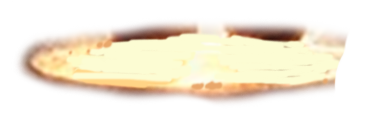
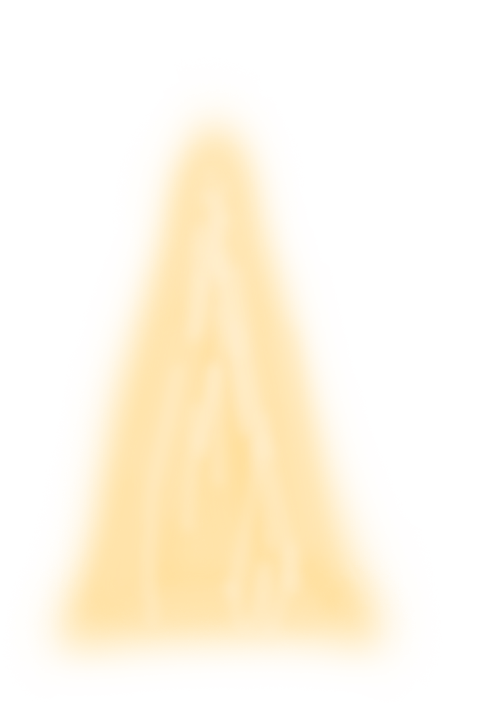
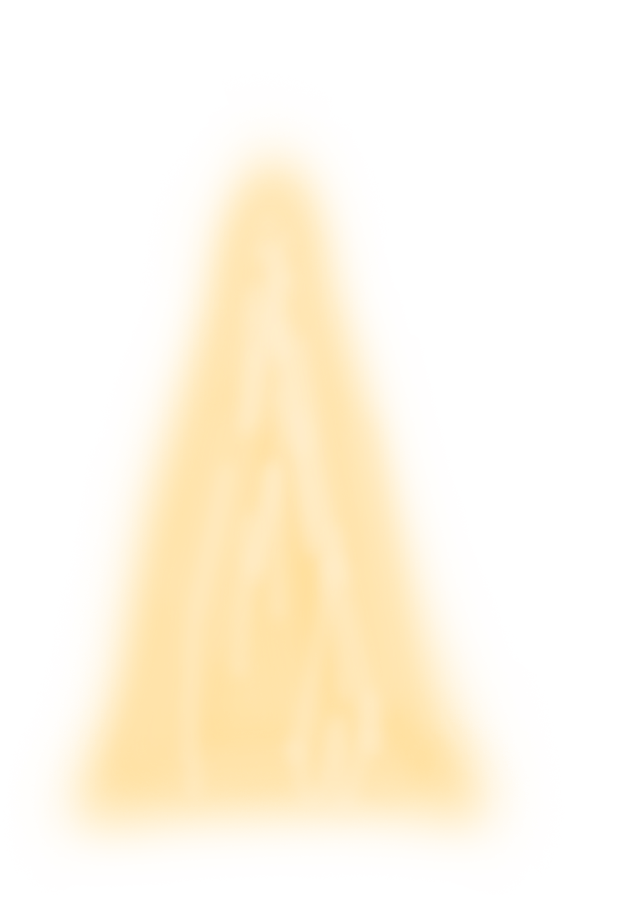

-
About Gnomes
-
GnomeBucks (GNBX) is a gamified cryptocurrency that turns gold mining into an exciting adventure. Users become digital gnomes, mining virtual gold, creating unique characters, collecting rare NFTs, and building their financial empire
-
Name: Kromosh Stonepiercer
Backstory: Hailing from the ancient mining kingdom of Granitania, Kromosh is known for his skill at finding weak spots in the hardest rocks.
Skill: "Piercing Pickaxe" — increases the chance of discovering extra coins with every strike.LEVEL 1
 


-
Name: Rungar Goldseer
Backstory: From the golden hills of Auroria, Rungar has an uncanny ability to sense hidden treasures.
Skill: "Treasure Sense" — boosts the probability of rare chest drops.LEVEL 2

-
Name: Ostrokop Spireclimber
Backstory: In Pinnograd, where mines stretch skyward, Ostrokop mastered the art of angled mining to reach hidden deposits.
Skill: "Perfect Angle" — increases coin yield by 20% during the first 10 minutes.LEVEL 3

-
Name: Teneshar Shadowminer
Backstory: Born in abandoned mines, Teneshar survived using his cunning and mechanical traps.
Skill: "Wealth Trap" — occasionally doubles coin production for a short period.LEVEL 4

-
Name: Vulkanit Draggnord
Backstory: From Clusteria's volcanic depths, Vulkanit represents strength and resilience.
Skill: "Fiery Endurance" — negates penalties for hard-to-reach locations, increasing productivity.LEVEL 5